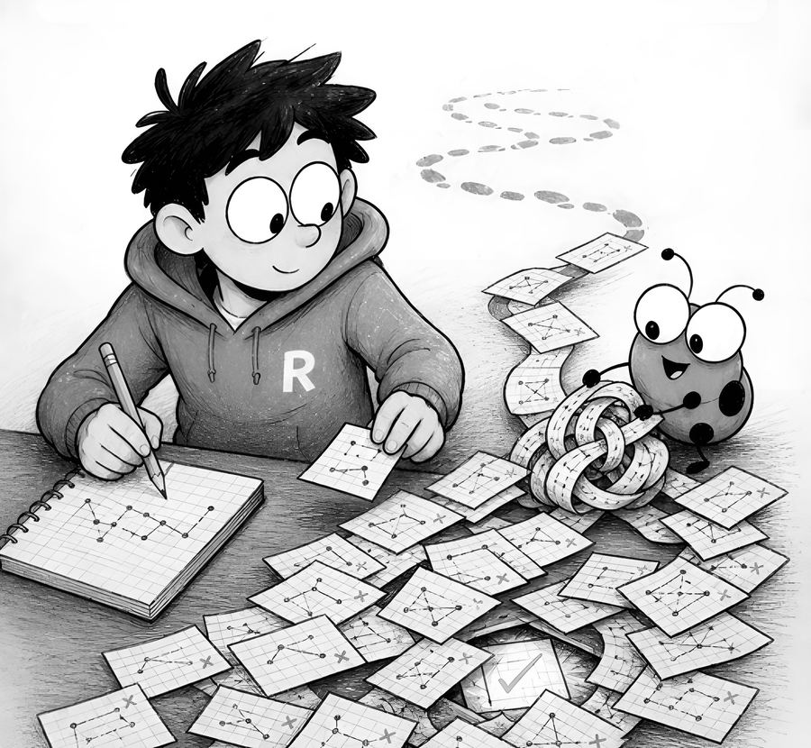
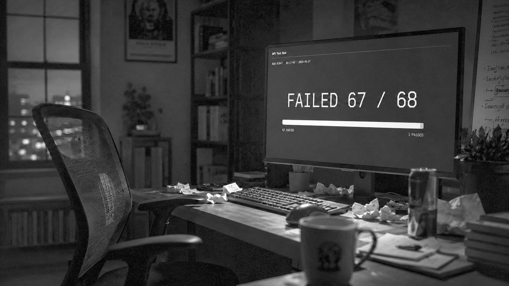

Chapter 2
The 67/68 Problem
I told you how much I loved coding. Now let me tell you about the two days it made me question that love.
Two or three years ago, I was integrating with an API that shall remain nameless — partly to protect the guilty, partly because you’ve definitely met one just like it. This API had a communication style best described as minimalist. No error messages. No logs worth reading. Just HTTP status codes, and a dashboard that showed exactly one useful metric: failed requests over total requests.
It started at 1/1. Then 2/2. Then 13/13. Then 32/32. A perfect record — of failure. I was deep in debugging mode, changing things, re-sending, changing more things. The next time I looked at the dashboard, it read:
67/68.
One request had worked.
Which one?
I froze. Somewhere in the last hour of frantic edits, one combination of my changes had produced a success — and I had kept editing right past it. Does Ctrl+Z work on your entire project? Asking for a friend. (I guess that’s what git is for. The 2023 version of me was about to learn that lesson at full price.)
It took me two days to trace back which change had produced that single 200. Two days of manually reconstructing my own chaos, one edit at a time.
There’s a special kind of pain in almost. A clean 0/68 I could have made peace with — total failure is at least honest; you sigh, you rethink your approach, you move on. But 67/68 is the universe personally taunting you. Success wasn’t theoretical anymore. It had happened — on my machine, with my code, sometime in the last hour — and now it was hiding somewhere in my own edit history, fully aware of what it was doing to me. I remember physically leaning closer to the screen, as if the dashboard might whisper which request it was if I just looked sincere enough.
The cruelest part: I couldn’t even celebrate. Every engineer knows the rule — one success you can’t reproduce isn’t a success, it’s a fluke wearing a suit. Until I could make that 200 happen on purpose, it was worth exactly nothing. So close to done, and contractually obligated to pretend I wasn’t.
Here’s the uncomfortable truth about that story: nothing about the debugging required creativity. It required repetition with memory — try a variation, observe the result, record it, narrow down. I was a slow, tired, increasingly bitter for-loop with a caffeine dependency.
That is exactly the class of misery that’s now optional.

Don’t chase the euphoria
When that request finally worked, the dopamine hit was unreal. I get it — that rush is why half of us are in this industry.
But as much as I loved that feeling, I won’t recommend you chase it. That euphoria is the reward for surviving a process that shouldn’t have required survival. If you’ve been around the industry, you know “prompt engineering” became a thing — a skill, a job title, a thousand LinkedIn posts. There’s something newer now, and I hope it stays relevant for a while because it’s genuinely cool: loop engineering.
What a loop actually is
Prompt engineering is asking the machine really nicely, once, and hoping.
Loop engineering is different: instead of sitting there re-running the thing by hand until it works, you put an agent in charge of making it work — running a series of steps, checking the result, adjusting, and repeating — so you don’t have to sit there babysitting the terminal.
Your job moves upstream. You don’t write the fix; you define what success looks like, hand over the tools to check for it, and tell the agent to iterate until success is met. Until the agent sees that 200, it keeps looping — trying different things, reading the actual errors, narrowing down. Exactly what I did across two miserable days, except it doesn’t get tired, doesn’t forget what it tried in attempt #12, and doesn’t edit past the working version without noticing.
Every real loop has four parts:
- An exit condition — a machine-checkable definition of “done.” A 200 response. A passing test suite. A script that exits 0. Not “looks good to me” — the agent can’t see vibes.
- A feedback signal — the loop is only as smart as the errors it can read. Actual response bodies, stack traces, test output. Garbage feedback in, hallucinated fixes out.
- Permission to act — the agent needs to be able to edit code, run the command, and see the result. A loop it can’t close is just a prompt with extra steps.
- A budget — max attempts or a rough time limit, so a truly stuck loop escalates back to you instead of burning tokens until the heat death of the universe.
If you remember one sentence from this chapter: a prompt asks for code; a loop asks for an outcome.